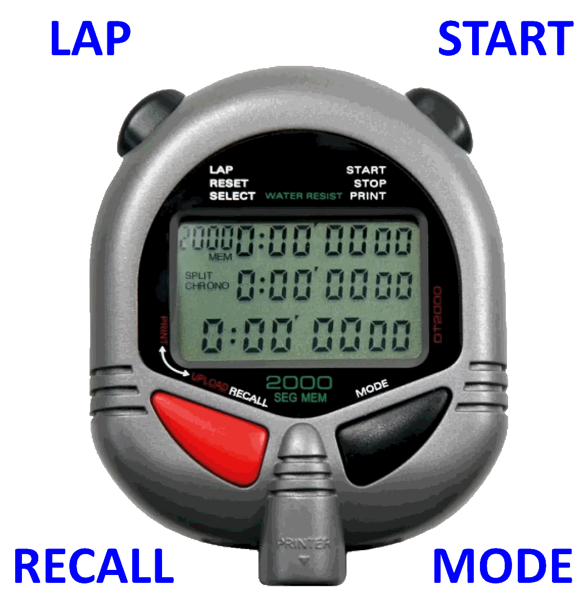

ULTRAK / DIGISport DT2000 StopWatch Guide

Clearing Stored Times
- Press MODE until you are on the timing screen with 3 lines of times.
If the number top-left is less than 2000 then there are times to clear!
- Press RECALL, you should now see MCH at the bottom left of the screen.
- Press and hold down START/STOP and continue holding until ALL CLEARED is displayed and the beeping has stopped.
Timing
- Press MODE until you are on the timing screen.
- Check the screen says 2000 ⇒ if not see “Clearing Stored Times” above.
- Check the screen says SPLIT CHRONO ⇒ if not press and hold LAP for 2 seconds to change mode.
- Press START/STOP to start the run.
- Press LAP for every runner crossing the finish.
- Press START/STOP after the run.
- Press LAP to store the times.
Uploading
- Press MODE until you see UPLOAD ALL
- If the stopwatch says PRINT ALL ⇒ press RECALL to change to upload mode.
- If the stopwatch says UPLOAD 0 ⇒ you haven’t stored the times, see the last step above!
- Assuming you’re connected to the computer with the software ready… press START/STOP to start the upload.